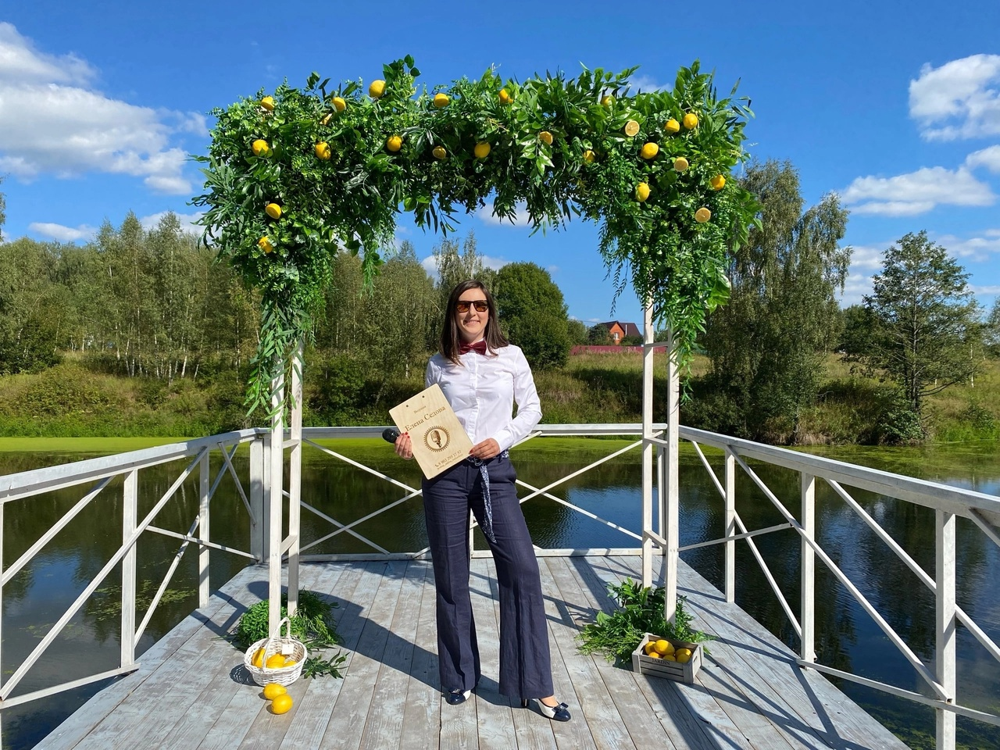
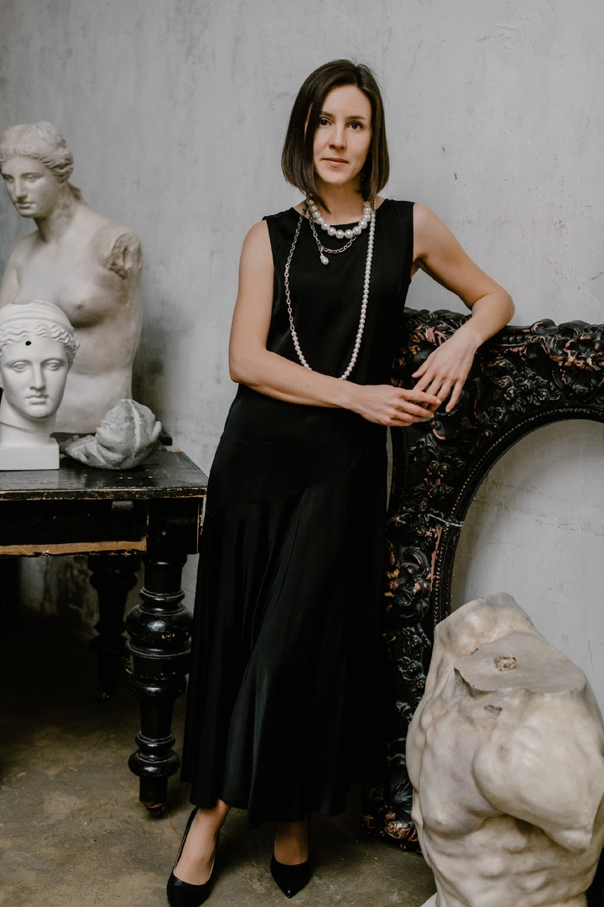
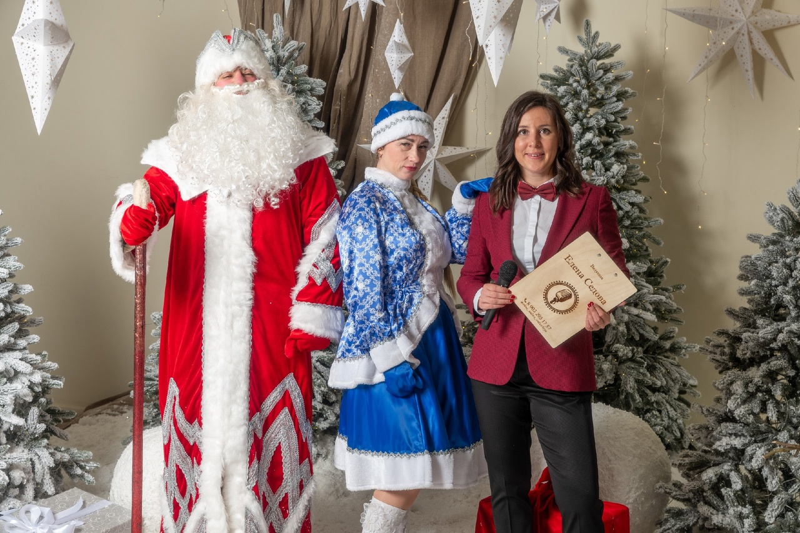

Как ведущему продвигаться в социальных сетях. Сколько можно заработать и что делать, чтобы работа приносила хороший доход и удовольствие?
Читайте в интервью с Еленой Седовой, ведущей праздников из Москвы.
Мы взяли у нее короткое интервью:
— Лена, расскажи, что было до курса, какой средний доход был в месяц? Сколько клиентов?
— До курса доход в месяц был до 100000р (летом больше, зимой меньше).
Шёл явный спад и цена вместо того, чтобы расти, падала. То есть заказов было достаточно много, но они были один дешевле другого, хотя ещё до пандемии у меня был достаточно высокий уровень. Мир ушёл вперёд, а я всё была на несколько лет назад. С неоформленными соц сетями, без группы, без нормального контента.
По мере обучения на курсе, раз и начало получаться. Заявок больше, уже не трясешься над каждой, а спокойно объявляешь цену, согласно своего опыта и мастерства, так как можешь это показать грамотно оформленной группой. Клиенты стали заказывать другие, которые выбирают по качеству, а не по цене.
Наконец-то, пошел кайф от работы, на которой тебя ценят, хотят и с удовольствием за это платят нормальные деньги. А я с кайфом делаю им охренительные праздники))

— Расскажи, трудно было учиться? Уроки были понятными или что-то вызывало сложности?
— Мне учиться было немного сложно, так как всё было новое. Но всё предельно понятно написано и объяснено. Так что нужно только делать то, что сказано в уроках. Немного муторно отсматривать группы конкурентов и смежников на предмет того, живые они или нет.
Но, в целом, я справлялась довольно неплохо.
— А ты ведь с куратором училась? Как тебе куратор?
— Куратор хороший, на всё быстро отвечал, дал пару дельных советов. В целом не на 100% нужная опция, если ты реально профессионал. Но годно.
А, вообще, курс своих денег стоит однозначно. Для тех, у кого дорогая услуга он отбивается одним-двумя заказами. Но у нас услуги одноразовые. Так что, те ремесленники, что находят клиентов на несколько раз, тоже в большом плюсе.

— Какие сейчас действия делаешь для привлечения клиентов? Как часто пишешь посты? Запускаешь ли рекламу?
— Реклама запущена +- постоянно. Посты пишу на страницу раз-два в месяц. В группу и того реже.
— А можешь поделиться, как изменилась жизнь, когда увеличился доход? Может что-то купила себе? Съездила в путешествие? Что-то смогла сделать, чего раньше не могла себе позволить?)
— Провела сезон) Пока идет работа, сильно никуда не выберешься. А после сезона съездила отдохнуть, купила новую машину. Да и в целом чувствуешь себя уверенно, стабильно. Это важно.
— Всё, остался только вопрос, сколько сейчас зарабатываешь? Сколько в среднем в месяц? Сколько клиентов? А вот примерно сколько за год было прошедший заработано? Теперь для протокола)
— В среднем 200000 в месяц. За летний сезон было больше 40 мероприятий.
С мая по декабрь 2 млн.

— Очень крутые результаты) Какие дальше планы по развитию? Отдыху?
— Дальше повышать чек, выйти на другие регионы. По отдыху - съездить с ребенком в Китай.
— Елена, благодарю тебя за ответы) Может еще хочешь что-то добавить для тех, кто выбирает курс и сомневается?
— Тот, кто сомневается, никогда не достигнет успеха! Пока ты сомневаешься, другие делают!
— Ещё раз спасибо за ответы и УДАЧИ!!! Пусть все твои цели и планы воплощаются!
— Спасибо!